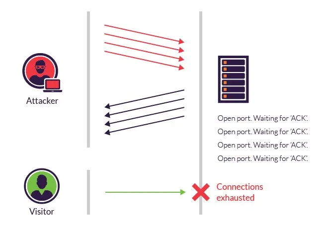
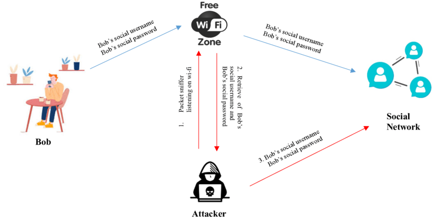

A network-based attack is a type of cyber attack that targets vulnerabilities and weaknesses
in computer networks and their components. These attacks focus on exploiting security flaws in
network protocols, devices, and infrastructure to gain unauthorized access, disrupt communication,
steal information, or carry out other malicious activities. Network-based attacks often occur over
the internet or local networks and can affect individuals, organizations, and even critical infrastructure.
DOS (Denial Of Service) Attack
A Denial of Service (DoS)attack is a type of cyber attack that aims to disrupt the
availability of a computer system, network, or service by overwhelming it with a high volume of traffic.
The goal of a DoS attack is to make the targeted system or service unavailable to legitimate users,
essentially denying them access. DoS attacks can last from a few hours to many months, costing companies and consumers time
and money while their resources and services are unavailable.
- Attackers in these types of attacks typically flood web servers, systems or networks with traffic that overwhelms the victim's resources and makes it difficult or impossible for anyone else to access them.
- DoS and DDoS attacks often take advantage of vulnerabilities in networking protocols and how they handle network traffic. For example, an attacker might overwhelm the service by transmitting many packets to a
vulnerable network service from different Internet Protocol (IP) addresses.
- DoS and DDoS attacks target one or more of the seven layers of the Open Systems Interconnection (OSI) model
Types of DoS attacks
DoS and DDoS attacks have a variety of methods of attack. Common types of denial-of-service attacks include the following:
- Application layer
These attacks generate fake traffic to internet application servers, especially domain name system (DNS) servers or Hypertext Transfer Protocol (HTTP) servers. Some application layer DoS attacks flood the target servers with network data; others target the victim's application server or protocol, looking for vulnerabilities.
- Buffer overflow
This type of attack is one that sends more traffic to a network resource than it was designed to handle.
- DNS amplification
In a DNS DoS attack, the attacker generates DNS requests that appear to have originated from an IP address in the targeted network and sends them to misconfigured DNS servers managed by third parties. The amplification occurs as the intermediate DNS servers respond to the fake DNS requests. The responses from intermediate DNS servers to the requests may contain more data than ordinary DNS responses, which requires more resources to process. This can result in legitimate users being denied access to the service.
- Ping of death
These attacks abuse the ping protocol by sending request messages with oversized payloads, causing the target systems to become overwhelmed, to stop responding to legitimate requests for service and to possibly crash the victim's systems.
- State exhaustion
These attacks also known as Transmission Control Protocol (TCP) attacks -- occur when an attacker targets the state tables held in firewalls, routers and other network devices and fills them with attack data. When these devices incorporate stateful inspection of network circuits, attackers may be able to fill the state tables by opening more TCP circuits than the victim's system can handle at once, preventing legitimate users from accessing the network resource.
- SYN flood
This attack abuses the TCP handshake protocol by which a client establishes a TCP connection with a server. In a SYN flood attack, the attacker directs a high-volume stream of requests to open TCP connections with the victim server with no intention of completing the circuits. A successful attack can deny legitimate users access to the targeted server.
- Teardrop
These attacks exploit flaws like how older operating systems (OSes) handled fragmented IP packets. The IP specification enables packet fragmentation when the packets are too large to be handled by intermediary routers, and it requires packet fragments to specify fragment offsets. In teardrop attacks, the fragment offsets are set to overlap each other. Hosts running affected OSes are then unable to reassemble the fragments, and the attack can crash the system.
What is TCP?
TCP stands for Transmission Control Protocol. It is one of the core protocols of the Internet Protocol Suite, commonly referred to as TCP/IP. TCP is responsible for ensuring reliable communication between devices over a network, particularly over the internet.
TCP provides a set of rules for how data packets should be exchanged between devices to ensure
the integrity, reliability, and orderly delivery of data. It operates at the transport layer of
the OSI (Open Systems Interconnection) model, which is a conceptual
framework for understanding how different networking protocols interact.

What is TCP SYN flood attack?
A TCP SYN flood attack is a type of Denial of Service (DoS) attack that targets the three-way
handshake process of the Transmission Control Protocol (TCP). This attack exploits the way TCP
establishes connections between devices by overwhelming the target system's resources with a
flood of SYN (synchronize) requests, leading to a denial of service
Three-Way Handshake
In a TCP SYN flood attack, the attacker sends a massive number of SYN packets to the target system,
making it appear as if many clients are trying to initiate connections. However, the attacker doesn't
complete the handshake by sending the final ACK packet. As a result, the target system keeps resources
reserved for each incomplete connection, waiting for the final ACK.
TCP SYN Flood Attack
In the TCP three-way handshake, a client initiates a connection with a server by sending a SYN packet.
The server responds with a SYN-ACK packet, acknowledging the request and indicating that it's ready
to establish a connection. The client then sends an ACK packet back to the server, finalizing the
connection establishment.
Attack Steps
- The attacker sends a large number of SYN packets with spoofed source IP addresses (IP address forgery) to the target system.
- The target system receives the SYN packets and responds with SYN-ACK packets, preparing to establish connections.
- However, because the source IP addresses are spoofed or non-responsive, the target system doesn't receive the final ACK packets to complete the handshake.
- The target system's resources become exhausted as it continues to maintain connections in a half-open state, waiting for the final ACK that will never arrive.
- Legitimate users attempting to establish legitimate connections are denied access due to the resource exhaustion caused by the flood of incomplete connections.
It's important to note that while SYN flood attacks are a significant threat, they are just one example of the many ways attackers can exploit vulnerabilities in networking protocols to disrupt services and cause denial of service.
>
Sniffing?
Network sniffing, also known as packet sniffing or packet analysis,
refers to the process of capturing and analyzing data packets as they
travel across a computer network. This practice is often used for legitimate
purposes such as network troubleshooting, network management, and security monitoring.
However, it can also be exploited for malicious activities.

- Step 1: User enter his username & password through wifi zone.
- Step 2: Attacker listen to the packets sent through sniffing in the wifi zone.
- Step 3: Attacker will retrieve the username and password typed by the user.
- Step 4: Now, Attacker will login into the user account and get the confidential information.
How Sniffing Works?
Network sniffing involves capturing and inspecting data packets that are transmitted between devices on a network.
These packets contain information such as source and destination addresses, protocols used, and the actual data
being transmitted. Sniffing can be done using
specialized software or hardware tools called packet sniffers or network analyzers.
Types of Sniffing?
Passive Sniffing: In a passive sniffing attack, the hacker monitors traffic passing
through a network without interfering in any way. This type of attack can be beneficial for gathering
information about targets on a network and the types of data (e.g., login credentials, email messages)
they are transmitting. Because it does not involve any interference with the target systems, it is also
less likely to raise suspicion than other types of attacks.
Active Sniffing: Active sniffing is a type of attack that involves sending crafted
packets to one or more targets on a network to extract sensitive data. By using specially crafted
packets, attackers can often bypass security measures that would otherwise protect data from being
intercepted. Active sniffing can also involve injecting malicious code into target systems that allows
attackers to take control of them or steal sensitive information.